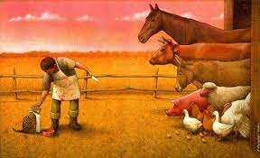

O especismo é uma forma de discriminação contra quem não pertence a uma determinada espécie. Similar ao racismo, o sexismo e outros tipos de preconceito, o especismo se utiliza de argumentos sem base científica ou moral para validar a exploração e subjugamento de uma espécie sobre outra.
O especismo é a discriminação arraigada na sociedade em que os seres humanos exploram e se beneficiam dos animais. Alguns indivíduos têm defendido os direitos dos animais ao longo da história. O filósofo Oscar diferencia o "não especismo" (ausência de discriminação) do "antiespecismo" (oposição ativa ao especismo). No final do século XVIII e início do século XIX, surgiram pesquisas e teorias questionando a exploração animal, e as primeiras organizações de defesa dos animais foram estabelecidas. Nos anos 50, o movimento antiespecista ganhou força com o termo "especismo" cunhado por Richard Ryder, dando início a discussões sobre justiça social em relação aos animais.



Neste intenso vídeo de debate, Robertina emprega argumentos sólidos e fatos históricos para desmontar as bases do nazismo, desafiando Josefino a questionar suas crenças.

Pedro, o especismo é uma prática discriminatória e exploratória em relação aos animais. Tornar-se antiespecista promove a igualdade entre as espécies.
82
5

Ana, entendo sua perspectiva, mas acredito que a espécie humana, por ser mais inteligente e racional, tem o direito de usar os animais em benefício próprio. Considero isso parte de nossa obrigação como seres humanos
2
184
Você acreditar que os animais foram feitos para te servir mostra a sua ignorância. Os animais sofrem com práticas cruéis para obter couro e pele para a luxúria da indústria da moda, são explorados em circos e caçados descontroladamente.
68
4
Isso é decorrência da evolução humana. Nossos ancestrais lutaram e evoluíram para tornar o mundo nosso. Parar de usar espécies inferiores é retroceder.
12
28
Evoluimos para sobreviver e devemos fazer todas as espécies viverem em harmonia.
78
1
Os animais são menos sensitivos do que nós, eles não são seres emocionais e suas dores são supervalorizadas.
125
5
Assim como todo ser vivo, os animais sofrem. As vacas podem sofrer com o Transtorno de Estresse Pós-Traumático (TEPT) e os porcos com a Síndrome de Estresse Suíno (SES)
45
5
Coitados! Peço desculpas pela minha insensibilidade. Gostaria de ajudar a causa. Percebo que os animais são muito oprimidos, e isso torna o mundo sangrento.
168
3
Que bom! uma forma de você entrar é começando com o veganismo, aos poucos todas as espécies se unem.
45
5